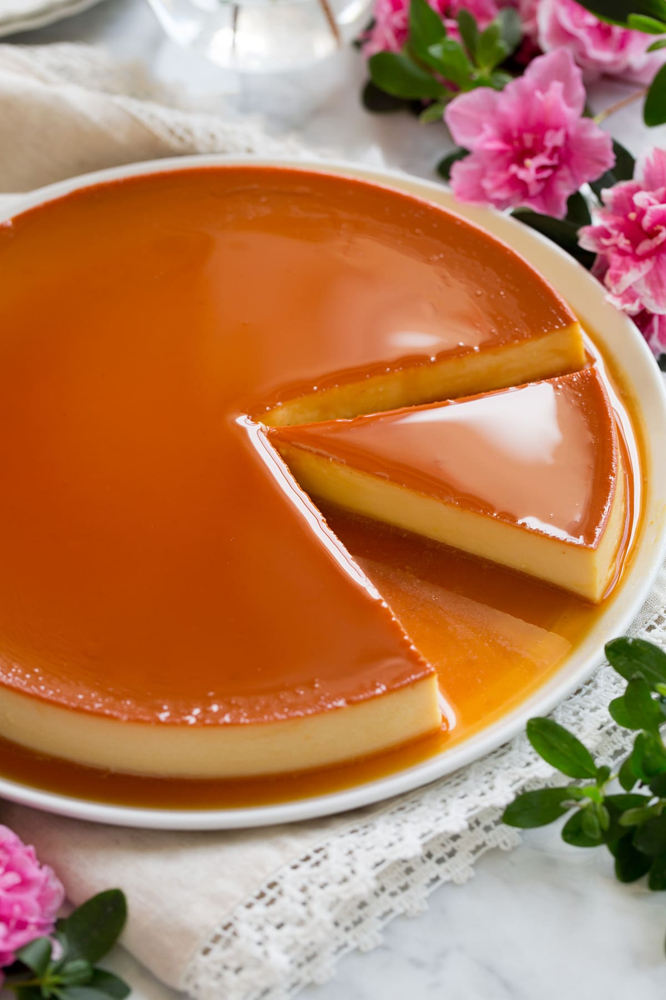

—— Cookbook ——
By: Denisse
Recipe #1: Flan

Ingredients:
One condensed milk
One carnation milk
4 eggs
1 & 1/2 cup of whole milk
1 tablespoon of vanilla extract
1 bar of cream cheese
pinch of salt
Preheat oven to 400 to 500 degrees
For the caramel:
On a pan melt 1/2 cup of sugar on low heat until golden brown
Put the caramel in a round mold
Directions:
Blend all the ingredients
Grab an aluminum pan bigger than the round mold and fill it halfway with water
Cover the round mold with aluminum foil
Put the round mold in the aluminum pan
Put it into the oven for an hour
Stick a toothpick in the middle and if clean take it out if not let it bake for another 5-10 min. uncovered
Once it's ready let it cool down in the fridge for about 3-5 hours
Even better let it sit in the fridge overnight
Recipe #2: Brownies

Ingredients:
5 tablespoons unsalted butter
1 1/4 cups granulated sugar
2 large eggs plus 1 egg yolk, cold
1 teaspoon vanilla extract
1/3 cup vegetable oil
3/4 cup unsweetened cocoa powder
1/2 cup all-purpose flour
1/8 teaspoon baking soda
1 tablespoon cornstarch
1/4 teaspoon salt
3/4 cup of chocolate chips
Directions:
Preheat the oven to 325 degrees
Line a 8 by 8-inch pan with foil or parchment paper and spray with nonstick cooking spray or you can use a stick of butter
In a microwave safe bowl, add the butter and sugar
Microwave for about 1 minute, or until the butter is melted
Whisk in the eggs, egg yolk, and vanilla
Stir in the oil and cocoa powder
With a rubber spatula, stir in the flour, baking soda, cornstarch, and salt until combined
Stir in the chocolate chips
Spread the brownie batter evenly into the prepared pan
Place in the oven and bake for 30 minutes, or until the brownies are set and a cake tester inserted into the center has moist crumbs attached
Don't overcook. Let it cool completely before cutting